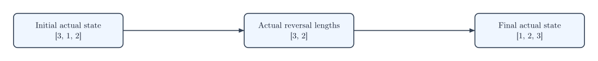
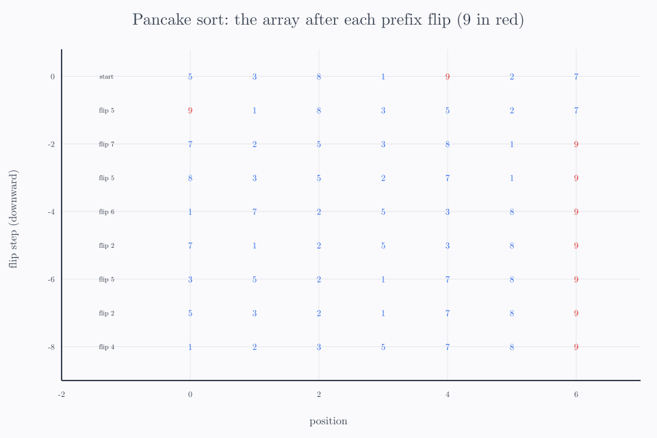
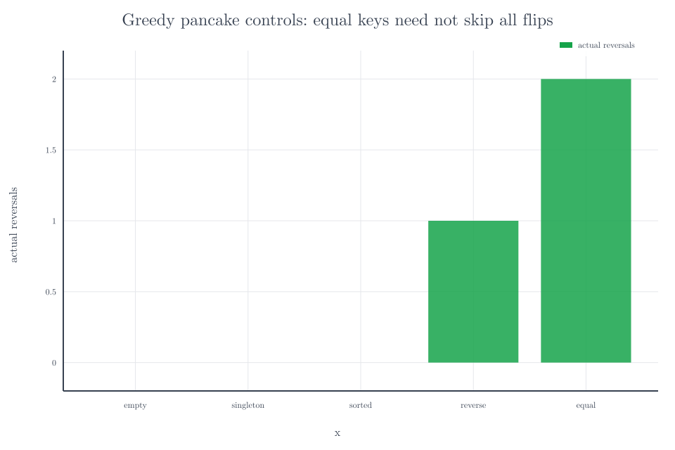
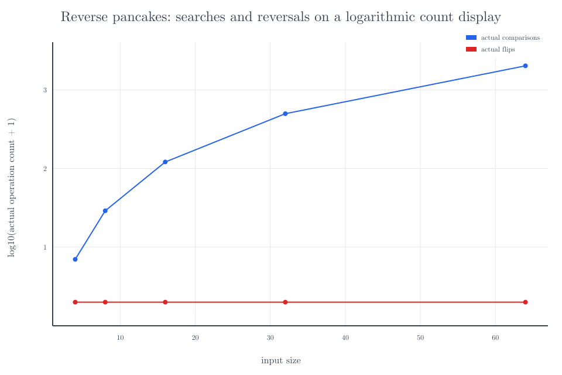

Pancake sort: actual prefix reversals
Abstract
The greedy producer finds the first maximum of each unsorted prefix, brings it to the top if necessary, then reverses the prefix to settle it. Already-settled maxima cause no reversal. For n>=1 there are at most2(n-1) flips, with quadratic worst-case comparisons and element movement. This is not a shortest-flip solver and is not stable. Integer fixtures isolate the mechanism; no dataset is needed.
Mechanism and scope
The greedy producer finds the first maximum of each unsorted prefix, brings it to the top if necessary, then reverses the prefix to settle it. Already-settled maxima cause no reversal. For n>=1 there are at most2(n-1) flips, with quadratic worst-case comparisons and element movement. This is not a shortest-flip solver and is not stable. Integer fixtures isolate the mechanism; no dataset is needed.
A tiny actual producing history
The table and native diagram use the same producing run. Captured records own their values; the report does not reconstruct the algorithm.
#include <dm/dm.hpp>
int main() {
std::filesystem::create_directories("build");
auto t = dm::algorithms::pancake_sort_trace({3, 1, 2});
std::print("| prefix | first maximum index | comparisons | actual post-state |\n| ---: | ---: | ---: | " "--- |\n");
for (auto &r : t.steps)
std::print("| {} | {} | {} | `{}` |\n", r.prefix, r.maximum_index,
r.comparisons, r.values);
dm::graphics::Diagram d;
d.node("n0", {0, 0},
std::format("Initial actual state\n{}", t.states.front()));
d.node("n1", {8, 0},
std::format("Actual reversal lengths\n{}", t.result.flips));
d.node("n2", {16, 0}, std::format("Final actual state\n{}", t.result.sorted));
d.edge("n0", "n1").edge("n1", "n2");
d.save_svg("build/pancake_sort_tiny.svg");
}| prefix | first maximum index | comparisons | actual post-state |
|---|---|---|---|
| 3 | 0 | 2 | [2, 1, 3] |
| 2 | 0 | 1 | [1, 2, 3] |

The original fixture, retained
This complete program retains the original inputs, seed and substantive experiment. Any added display prefix is explicitly separate from the original random call schedule.
#include <dm/dm.hpp>
using namespace datamunge::algorithms;
using namespace datamunge::graphics;
int main() {
std::ostringstream original_output;
auto *original_cout = std::cout.rdbuf(original_output.rdbuf());
std::filesystem::create_directories("build");
const std::vector<int> original = {5, 3, 8, 1, 9, 2, 7};
const PancakeResult res = pancake_sort(original);
std::cout << "=== Pancake sort of [5,3,8,1,9,2,7] ===\n";
std::cout << "sorted: ";
for (int v : res.sorted)
std::cout << v << " ";
std::cout << "\nflip sequence (prefix lengths): ";
for (std::size_t k : res.flips)
std::cout << k << " ";
std::cout << "\n(" << res.flips.size() << " flips; bound 2(n-1) = " <<
2 * (original.size() - 1) << ")\n";
auto trace = pancake_sort_trace(original);
const auto &states = trace.states;
auto plot = RPlot::create();
for (std::size_t s = 0; s < states.size(); ++s)
for (std::size_t p = 0; p < states[s].size(); ++p)
plot.text(static_cast<double>(p), -static_cast<double>(s),
std::to_string(states[s][p]),
states[s][p] == 9 ? RGB{220, 38, 38} : RGB{37, 99, 235},
13.0);
for (std::size_t s = 1; s < states.size(); ++s)
plot.text(-1.3, -static_cast<double>(s),
"flip " + std::to_string(res.flips[s - 1]), RGB{31, 41, 55},
10.0);
plot.text(-1.3, 0.0, "start", RGB{31, 41, 55}, 10.0);
plot.title("Pancake sort: the array after each prefix flip (9 in red)").x_label("position").y_label("flip step (downward)").background({250, 250, 252});
plot.x_limits(-2.0, static_cast<double>(original.size()));
plot.y_limits(-static_cast<double>(states.size()), 0.8);
plot.save_svg("build/pancake_sort_original.svg");
std::cout << "\nwrote pancake_sort.svg\n";
std::cout.rdbuf(original_cout);
std::print("| Original computed output |\n| --- |\n");
std::istringstream lines(original_output.str());
std::string line;
while (std::getline(lines, line)) {
while (!line.empty() && line.back() == ' ') line.pop_back();
if (!line.empty()) std::print("| `{}` |\n", line);
}
return 0;
}| Original computed output |
|---|
=== Pancake sort of [5,3,8,1,9,2,7] === |
sorted: 1 2 3 5 7 8 9 |
flip sequence (prefix lengths): 5 7 5 6 2 5 2 4 |
(8 flips; bound 2(n-1) = 12) |
wrote pancake_sort.svg |

Controls and boundary cases
#include <dm/dm.hpp>
int main() {
std::filesystem::create_directories("build");
std::vector<std::vector<int>> cases{{}, {1}, {1, 2, 3}, {3, 2, 1}, {2, 2, 2}};
std::vector<double> v;
std::vector<std::string> labels{"empty", "singleton", "sorted", "reverse",
"equal"};
std::print("| case | sorted | actual flips |\n| --- | --- | ---: |\n");
for (std::size_t i = 0; i < cases.size(); ++i) {
auto t = dm::algorithms::pancake_sort(cases[i]);
v.push_back(t.flips.size());
std::print("| {} | `{}` | {} |\n", labels[i], t.sorted, t.flips.size());
}
auto p = dm::graphics::RPlot::barplot(v, labels, "actual reversals");
p.title("Greedy pancake controls: equal keys need not skip all flips").y_label("actual reversals");
p.save_svg("build/pancake_sort_controls.svg");
}| case | sorted | actual flips |
|---|---|---|
| empty | [] | 0 |
| singleton | [1] | 0 |
| sorted | [1, 2, 3] | 0 |
| reverse | [1, 2, 3] | 1 |
| equal | [2, 2, 2] | 2 |

Producing work and finite observations
The table retains raw counts. The figure displays log10(count+1) so the single reversal stays visible alongside quadratic search work.
#include <dm/dm.hpp>
int main() {
std::filesystem::create_directories("build");
std::vector<double> x, y, z;
std::print("| n | actual comparisons | actual flips |\n| ---: | ---: | ---: |\n");
for (int n : {4, 8, 16, 32, 64}) {
std::vector<int> a(n);
std::iota(a.rbegin(), a.rend(), 1);
auto t = dm::algorithms::pancake_sort_trace(a);
std::size_t c = 0;
for (auto &r : t.steps)
c += r.comparisons;
x.push_back(n);
y.push_back(c);
z.push_back(t.result.flips.size());
std::print("| {} | {} | {} |\n", n, c, t.result.flips.size());
}
for (auto &value : y) value = std::log10(value + 1);
for (auto &value : z) value = std::log10(value + 1);
auto p = dm::graphics::RPlot::create();
p.lines(x, y, "actual comparisons", {37, 99, 235}).points(x, y,
{37, 99, 235}, 4).lines(x, z, "actual flips", {220, 38, 38}).points(x, z, {220, 38, 38}, 4).title("Reverse pancakes: searches and reversals on a logarithmic count display").x_label("input size").y_label("log10(actual operation count + 1)");
p.save_svg("build/pancake_sort_work.svg");
}| n | actual comparisons | actual flips |
|---|---|---|
| 4 | 6 | 1 |
| 8 | 28 | 1 |
| 16 | 120 | 1 |
| 32 | 496 | 1 |
| 64 | 2016 | 1 |

API and interpretation
All four blocks are complete editable C++ programs. Numerical tables retain raw native values; figures display only those returned records. Trace limits count documented logical records or scalar entries, not peak bytes or wall-clock work. Validation is complete before unchecked indexing; captured histories are educational owned storage. A returned result is interpreted under the algorithm-specific scope above, without a universal optimality, convergence or statistical-quality claim.
Gates and Papadimitriou study prefix-reversal bounds. The displayed native greedy run is not a minimum-flip solver.
Verification
This ten-report batch passes 89 CTest cases, 20 ASan/UBSan cases with all ten
producing families directly instrumented, 62 compiled and executed public
examples, 200/200 scoped file definitions plus 15/15 exact PCG class
definitions, and ten representative clangd hovers. Independent Python
hashlib/HMAC and arbitrary-integer PCG checks verify 75189 records with 123243
checks. Native independent per-pixel visibility, exhaustive prefix reversals,
quadratic LIS, integer perceptron updates, sampled-label tail counts and
exhaustive Boolean-cover checks supplement frozen valid-input comparisons for
all ten producers. Ten checkout and ten byte-identical installed development
headers compile independently; an installed-header native consumer links and
runs. All 40 complete programs execute; all 40 native figures have been visually
reviewed. HTML/Markdown exports preserve computed result rows and identical
image bytes. These are scoped native checks. Receipts:
build/mepml-conversion/batch-274-283/.